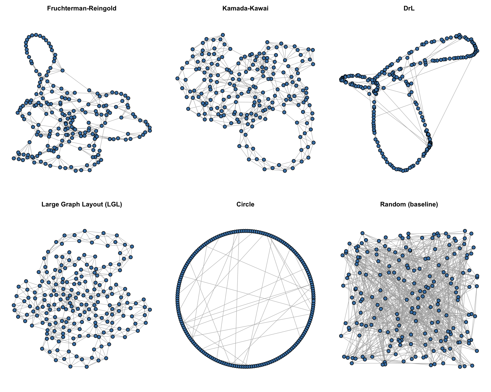
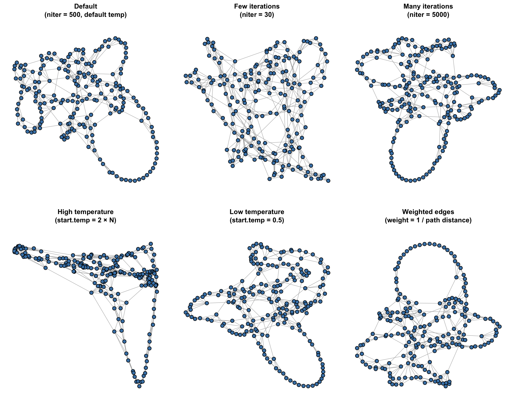

library(igraph)9 Network Layout Algorithm Comparison
How visualisation choices shape what we see in a network
Overview
A network layout algorithm takes a graph (nodes and edges) and assigns each node an (x, y) position on a 2-D canvas. The same network can look radically different depending on which algorithm you choose — and choosing the right one matters because it affects which structures are visually salient.
This notebook:
- Generates a synthetic small-world network to use as a shared test case.
- Runs six common layout algorithms side-by-side so you can compare their outputs directly.
- Dives deeper into the Fruchterman-Reingold algorithm and shows how its key parameters change the resulting picture.
Setup
1 · Generate a Small-World Network
We use the Watts-Strogatz model (sample_smallworld), a classic benchmark that produces networks with:
- High clustering — neighbours of a node tend to know each other.
- Short average path lengths — most pairs of nodes are only a few steps apart.
These properties are found in many real-world networks (social, biological, technological), making it a good test case for layout algorithms.
set.seed(42) # fix randomness for reproducibility
# 200 nodes arranged on a 1-D ring; each node connected to its 3 nearest
# neighbours on each side; each edge independently rewired with prob 0.03
g <- sample_smallworld(dim = 1, size = 200, nei = 3, p = 0.03)Inspect the network
cat("Network summary:\n")Network summary:print(g)IGRAPH 51a166a U--- 200 600 -- Watts-Strogatz random graph
+ attr: name (g/c), dim (g/n), size (g/n), nei (g/n), p
| (g/n), loops (g/l), multiple (g/l)
+ edges from 51a166a:
[1] 1-- 2 2-- 3 3-- 4 4-- 5 5-- 6 6-- 7 7-- 8 8-- 9
[9] 9-- 10 10--195 11-- 12 12-- 13 13-- 14 14-- 15 15-- 16 16-- 17
[17] 17-- 18 18-- 19 19-- 20 20-- 21 21-- 22 22-- 23 23-- 24 24-- 25
[25] 25-- 26 26-- 27 28--149 28-- 29 29-- 30 31-- 44 31-- 32 32-- 33
[33] 33-- 34 34-- 35 35-- 36 36-- 37 37-- 38 38-- 39 39-- 40 40--197
[41] 41-- 42 42-- 43 43-- 44 44-- 45 45-- 46 46-- 47 47-- 48 48-- 49
[49] 49-- 50 50-- 51 51-- 52 52-- 53 54--122 54-- 55 55-- 56 56-- 57
+ ... omitted several edgescat("\nNodes: ", vcount(g), "\n")
Nodes: 200 cat("Edges: ", ecount(g), "\n")Edges: 600 cat("Average path length: ", round(mean_distance(g), 3), "\n")Average path length: 5.297 cat("Clustering coefficient: ", round(transitivity(g, type = "average"), 3), "\n")Clustering coefficient: 0.518 Short average path length + high clustering = hallmarks of a small-world network.
3 · Compute All Layouts
We compute every layout once before plotting. This keeps run-times predictable and ensures each algorithm starts from the same underlying graph object.
layout_fr <- layout_with_fr(g) # Fruchterman-Reingold (force-directed)
layout_kk <- layout_with_kk(g) # Kamada-Kawai (spring-electrical)
layout_drl <- layout_with_drl(g) # DrL — designed for large graphs
layout_lgl <- layout_with_lgl(g) # Large Graph Layout
layout_circle <- layout_in_circle(g) # Circular — purely deterministic
layout_random <- layout_randomly(g) # Random — no optimisation (baseline)4 · Side-by-Side Layout Comparison
The six panels below show identical data — the same 200-node small-world graph — rendered with six different algorithms. Pay attention to which structures each layout makes easy (or hard) to see.
par(mfrow = c(2, 3), mar = c(1, 1, 2.5, 1))
plot(g,
layout = layout_fr,
main = "Fruchterman-Reingold",
vertex.size = node_size, vertex.color = node_col,
vertex.label = NA, edge.color = edge_col, edge.width = edge_width)
plot(g,
layout = layout_kk,
main = "Kamada-Kawai",
vertex.size = node_size, vertex.color = node_col,
vertex.label = NA, edge.color = edge_col, edge.width = edge_width)
plot(g,
layout = layout_drl,
main = "DrL",
vertex.size = node_size, vertex.color = node_col,
vertex.label = NA, edge.color = edge_col, edge.width = edge_width)
plot(g,
layout = layout_lgl,
main = "Large Graph Layout (LGL)",
vertex.size = node_size, vertex.color = node_col,
vertex.label = NA, edge.color = edge_col, edge.width = edge_width)
plot(g,
layout = layout_circle,
main = "Circle",
vertex.size = node_size, vertex.color = node_col,
vertex.label = NA, edge.color = edge_col, edge.width = edge_width)
plot(g,
layout = layout_random,
main = "Random (baseline)",
vertex.size = node_size, vertex.color = node_col,
vertex.label = NA, edge.color = edge_col, edge.width = edge_width)
par(mfrow = c(1, 1), mar = c(5, 4, 4, 2) + 0.1)Algorithm cheat-sheet
| Algorithm | Core idea | Best used when… |
|---|---|---|
| Fruchterman-Reingold | Nodes repel each other; edges act as springs pulling connected nodes together | General purpose; medium-sized graphs |
| Kamada-Kawai | Minimises the difference between graph-theoretic distance and geometric distance | Smaller graphs where geodesic distance should drive positions |
| DrL | Multilevel force-directed; groups nodes before placing them | Large graphs (thousands of nodes) |
| LGL | Builds outward from a root node using minimum spanning tree | Large, sparse graphs with clear hierarchy |
| Circle | Equally spaced nodes on a ring | Showing all nodes at equal visual weight; small graphs |
| Random | Positions drawn uniformly at random | Baseline comparison; never use in final visualisations |
5 · Fruchterman-Reingold Parameter Tuning
Fruchterman-Reingold (FR) is one of the most widely used force-directed algorithms. Understanding its parameters lets you control the trade-off between global structure (which clusters are far from which?) and local refinement (are tightly connected nodes packed together?).
Key parameters
| Parameter | Default | Effect |
|---|---|---|
niter |
500 | Number of iterations the algorithm runs. More iterations = more time for the layout to settle. |
start.temp |
sqrt(node count) |
Starting “temperature” — the maximum distance a node can move in a single iteration. |
Temperature intuition:
- High temperature → nodes can jump large distances per step → the algorithm explores the full space broadly, revealing global structure.
- Low temperature → nodes move in tiny steps → the algorithm barely moves from starting positions, only doing local fine-tuning.
Compute six FR variants
# 1. Default — reference point
fr_default <- layout_with_fr(g)
# 2. Very few iterations — layout hasn't had time to converge
fr_few_iter <- layout_with_fr(g, niter = 30)
# 3. Many iterations — fully converged, most refined
fr_many_iter <- layout_with_fr(g, niter = 5000)
# 4. High starting temperature — large displacements allowed;
# long-range/global structure is prioritised
fr_high_temp <- layout_with_fr(g, start.temp = vcount(g) * 2)
# 5. Low starting temperature — nodes barely move from random start;
# result is close to a random layout
fr_low_temp <- layout_with_fr(g, start.temp = 0.5)
# 6. Edge weights derived from graph-theoretic path distances.
# weight = 1 / path_distance means short-path neighbours attract
# more strongly and are pulled visually closer together.
path_dist <- distances(g) # all-pairs shortest paths
edge_list <- as_edgelist(g, names = FALSE)
edge_weights <- 1 / path_dist[edge_list] # one weight per edge
fr_weighted <- layout_with_fr(g, weights = edge_weights)Plot the six FR variants
par(mfrow = c(2, 3), mar = c(1, 1, 3, 1))
plot(g, layout = fr_default,
main = "Default\n(niter = 500, default temp)",
vertex.size = node_size, vertex.color = node_col,
vertex.label = NA, edge.color = edge_col, edge.width = edge_width)
plot(g, layout = fr_few_iter,
main = "Few iterations\n(niter = 30)",
vertex.size = node_size, vertex.color = node_col,
vertex.label = NA, edge.color = edge_col, edge.width = edge_width)
plot(g, layout = fr_many_iter,
main = "Many iterations\n(niter = 5000)",
vertex.size = node_size, vertex.color = node_col,
vertex.label = NA, edge.color = edge_col, edge.width = edge_width)
plot(g, layout = fr_high_temp,
main = "High temperature\n(start.temp = 2 × N)",
vertex.size = node_size, vertex.color = node_col,
vertex.label = NA, edge.color = edge_col, edge.width = edge_width)
plot(g, layout = fr_low_temp,
main = "Low temperature\n(start.temp = 0.5)",
vertex.size = node_size, vertex.color = node_col,
vertex.label = NA, edge.color = edge_col, edge.width = edge_width)
plot(g, layout = fr_weighted,
main = "Weighted edges\n(weight = 1 / path distance)",
vertex.size = node_size, vertex.color = node_col,
vertex.label = NA, edge.color = edge_col, edge.width = edge_width)
niter, start.temp, and edge weights.par(mfrow = c(1, 1), mar = c(5, 4, 4, 2) + 0.1)What to notice
- Few iterations (niter = 30): The layout looks incomplete — nodes have not had enough time to reach stable positions. Clusters are roughly visible but poorly resolved.
- Many iterations (niter = 5000): The layout is more refined and reproducible, but for this network the visual difference from the default may be modest — the algorithm converges well before 5 000 steps.
- High temperature: Nodes are spread aggressively across the canvas. Global cluster separation is exaggerated.
- Low temperature: The result resembles a random layout because nodes never moved far from their initial random positions.
- Weighted edges: Nodes that are close in graph-theoretic terms (short shortest path) are pulled tightly together visually, making dense local clusters compact and separation from the rest more obvious.
Summary
Layout algorithms are not neutral — each one privileges certain structural properties. Before choosing a layout:
- Consider graph size. FR and KK work well up to a few thousand nodes; DrL and LGL are designed for much larger graphs.
- Consider what you want to show. Geodesic distance → KK. Clusters → FR with enough iterations. Hierarchy → LGL. Pure enumeration → Circle.
- Never use random as a final layout — it is included here only as a visual baseline to show what “no information” looks like.
- Tune FR parameters when the default layout looks too crowded or too spread out. Start by adjusting
niter, thenstart.temp.